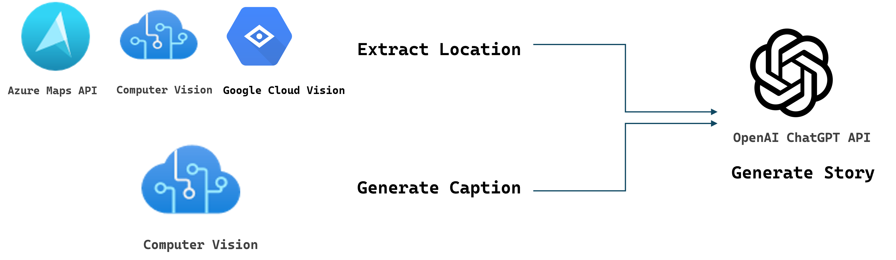
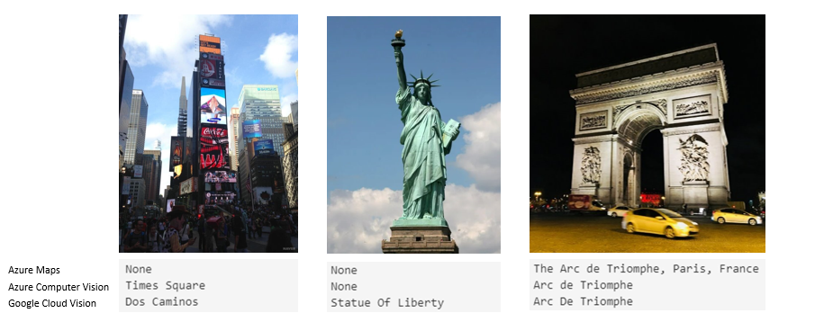
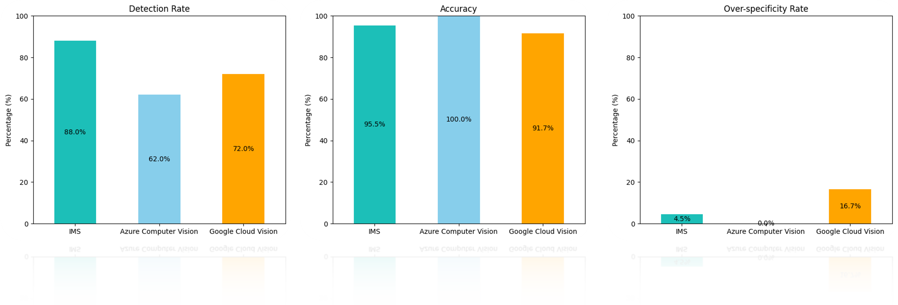
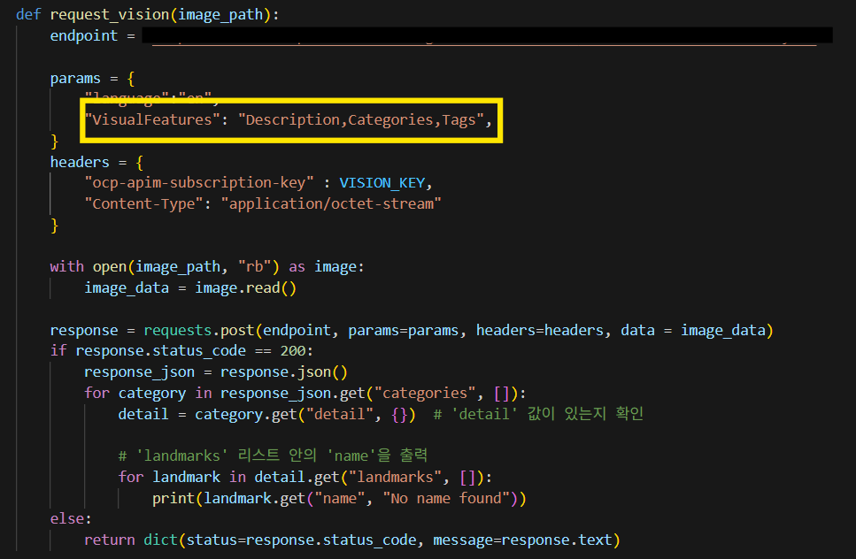
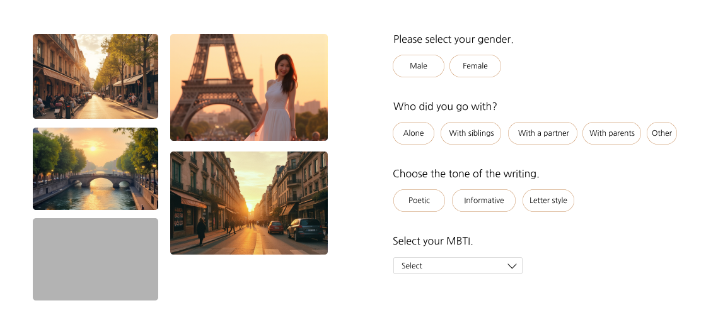

Prototype

The initial prototype used the PIL and Geopy libraries to convert GPS data into readable addresses. For better performance, the system was later enhanced in the areas of location data, computer vision, and OpenAI. Details are provided below.
Improvements

1. Extract location (Azure Map API, Azure Computer Vision, Google Cloud Vision)
Step 1 - Azure Maps: Extract GPS metadata from the image's EXIF data to identify landmarks, cities, and countries.
Step 2 - Azure Computer Vision: Perform landmark detection. If successful, the process ends here. While highly accurate for detected landmarks, the scope of recognizable landmarks is limited. If detection fails, proceed to Step 3.
Step 3 - Google Cloud Vision: Attempt landmark detection. This tool recognizes a wide range of landmarks but sometimes provides overly detailed or inaccurate results.

Azure Computer Vision demonstrated lower recognition rates, but when it did identify landmarks, the accuracy was significantly higher. On the other hand, Google Cloud Vision showed higher recognition rates but often lacked precision, occasionally providing overly detailed or irrelevant locations. Therefore, we decided to prioritize recognition using Azure Computer Vision first, and if it fails, supplement the results with Google Cloud Vision for better coverage.

2. Generate Caption (Azure Computer Vision)
Images are uploaded and analyzed using the Azure Computer Vision API via Azure Portal. The API generates dense captions along with confidence scores for each caption.
Images are resized to a maximum of 1290x1080 for efficient processing, and dense captions with confidence scores above 0.5 are filtered. The processing time is calculated, and data is organized.

We explored various methods to detect landmarks in photos using computer vision. As a result, we discovered that extracting a combination of Description, Categories, and Tags enables the recognition of iconic landmarks like the Eiffel Tower, unlike when extracting only the Description.

3. Generate Story (Azure OpenAI)
Captions and location data are processed by Azure OpenAI to generate travel stories, enhanced by user-provided parameters to improve model performance and ensure personalized, contextually relevant narratives.

For the gender parameter, we initially considered using Azure Face for facial detection, but after receiving confirmation that it was not available for use(Face service is only available to Microsoft managed customers and partners), we added this parameter as an alternative to address the limitation.
After add gender parameter, "A woman stands gazing at an old door" becomes "I stood before the old door, lost in its weathered charm."
Companions add shared experiences to the story. For instance, "Two women admire a distant mountain range" transforms into "My sister and I stood atop the rocky hill, marveling at the distant peaks."